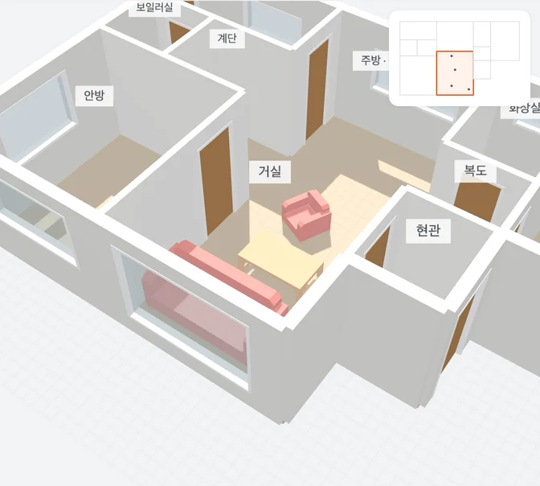
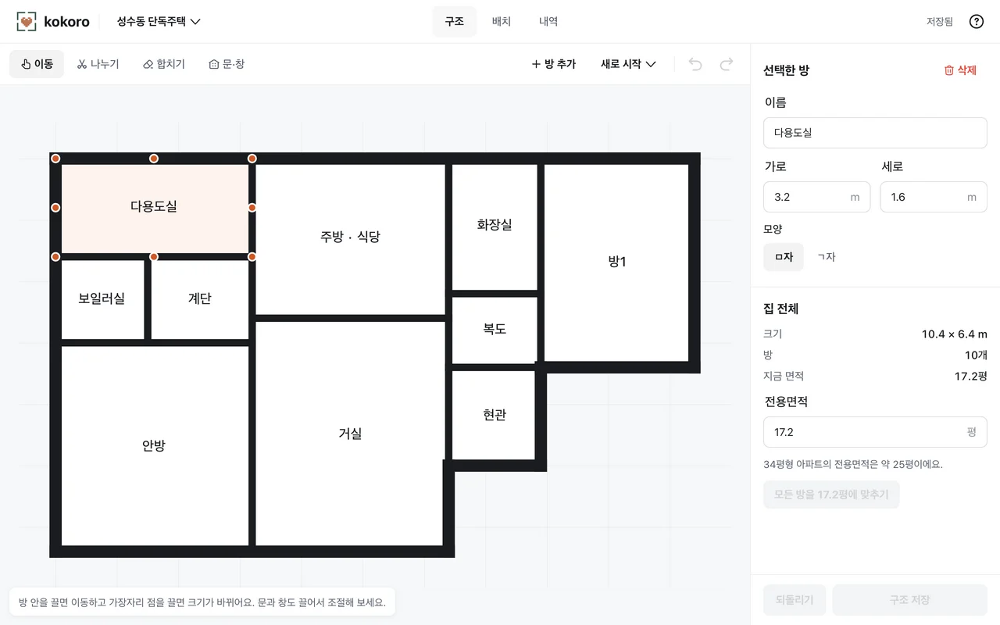
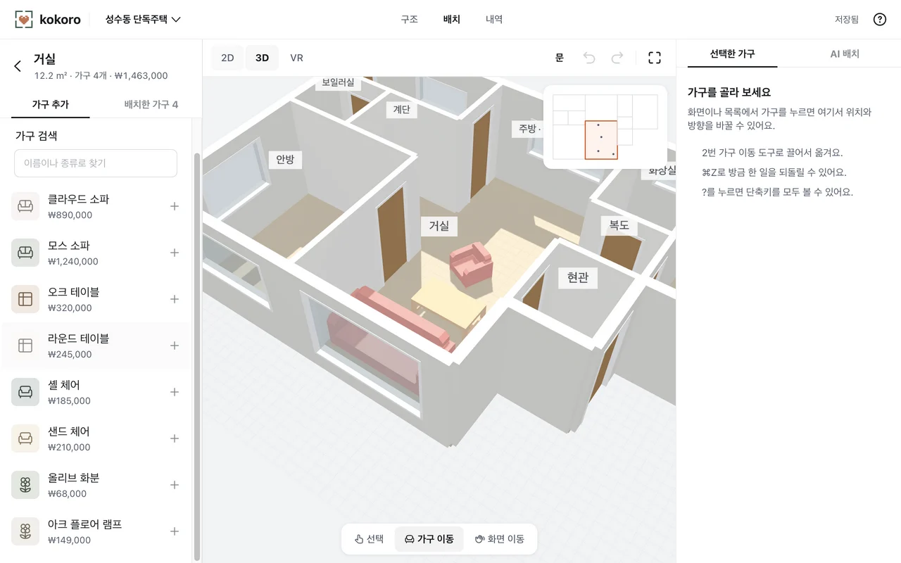
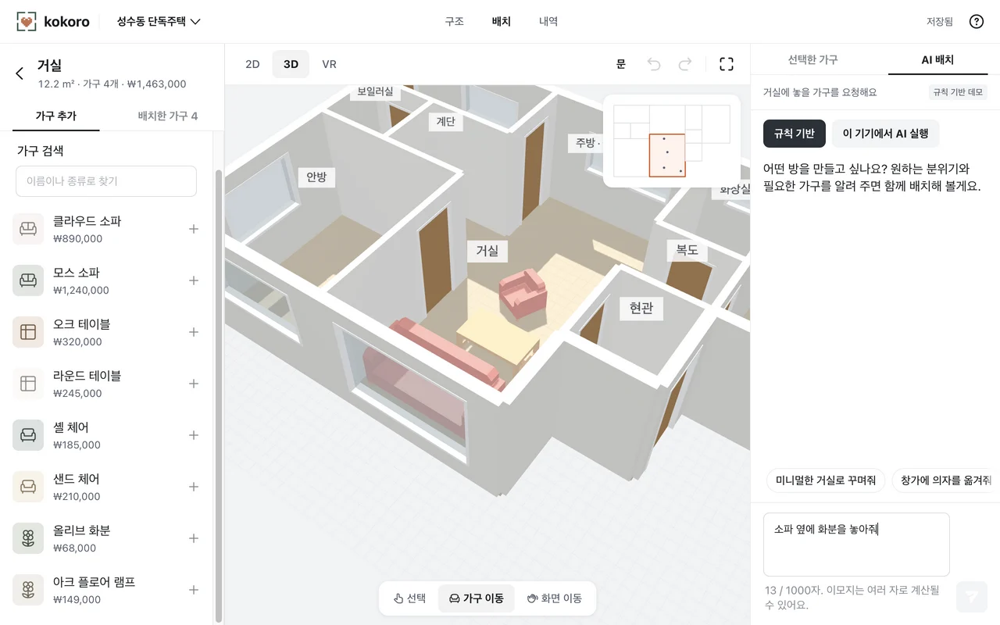

우리 집을
미리 꾸며보는
공간
직접 고친 집 구조에 가구를 놓고
같은 배치를 2D와 3D와 웹
VR로.
코코로 리모델링 스튜디오
2026년 10월 중간 구현 결과

도면만으로는
알기 어려운 것
“이 소파를 놓아도
거실을 편하게 지날 수 있을까?”
크기
가구 치수와 집 구조를 함께 비교해야 합니다.
공간감
평면 배치가 실제 시점에서는 다르게 느껴집니다.
조작 부담
배치를 바꿔 보려고 전문 3D 도구부터 익히기는 어렵습니다.
한 집을 끝까지
편집하는 흐름
이사를 앞둔 사용자가 거실을 꾸미는 하나의 사례로.
-
01
구조 만들기
이미지 초안이나 면적 입력에서 시작
-
02
가구 놓기
소파와 테이블을 추가하고 직접 수정
-
03
요청 확인하기
“소파 옆에 화분을 놓아줘”
-
04
저장하고 다시 보기
같은 배치를 여러 시점에서 확인
2D와 3D와 웹 VR은 별도 프로젝트가 아닌 같은 공간 데이터를 사용합니다.
초안을
내 집에 맞게
고칩니다
방과 문과 창을 직접 보정하는 구조 편집.
- 방 나누기와 합치기
- 크기와 모양 수정
- 문과 창 배치
이미지 분석 결과는 수정 가능한 초안입니다. 실제 치수는 사용자가 확인합니다.

놓고 옮기고
같은 배치로
확인
집 전체와 방 하나를 오가며 가구를 편집합니다.
- 추가와 이동과 회전과 삭제
- 2D와 3D 전환
- 실행 취소와 자동 저장
코코로 웹 데모 열기
공개 데모는 브라우저 저장 방식입니다.

요청을 확인하고
적용합니다
“소파 옆에
화분을 놓아줘”
- 요청을 정해진 형식으로 해석
- 가구와 대상과 위치 검증
- 사용자가 확인한 뒤 적용
잘못된 요청이나 취소 때문에 기존 배치가 바로 바뀌지 않도록 합니다.

화면은 함께 보고
저장은 구분합니다
2D와 3D와 웹 VR에 같은 구조와 가구를 전달합니다.
사용자 화면
React / TypeScript
Three.js / WebXR
구조와 가구 편집
프로젝트 API
Java 17 / Spring Boot
입력과 소유권 검증
조회와 저장
저장소
PostgreSQL
프로젝트와 배치 보관
Flyway로 DB 구조 관리
로컬 데모는 브라우저에 저장합니다.
서버 모드는 Spring과 PostgreSQL을 사용합니다.
WebXR은
브라우저에서 VR 장치를 사용하는 웹 표준입니다.
최신 배치를
오래된 저장으로
덮지 않도록
다른 시점의 저장
프로젝트 버전인 revision을 비교하고 오래된 요청은
409로 거절합니다.
처리 중 실패
한 번의 변경을 함께 저장하고 실패한 요청은 기존 상태를 유지합니다.
다른 사용자의 접근
인증과 프로젝트 소유권을 검사하고 소유자에게만 조회와 변경을 허용합니다.
서버 모드의 구현 범위. 공개 데모의 브라우저 저장과 구분합니다.
모델을 붙인 뒤
같은 문장으로 비교
평가용 30개에서 배치 요청의 의미와 순서가 일치하는지 확인했습니다.
| 처리 방식 | 일치 | 일치율 |
|---|---|---|
|
규칙 처리기
|
20 / 30 | 66.7% |
|
qwen3:4b
|
19 / 30 | 63.3% |
Apple M5 / RAM 16GB / Ollama 0.40.13 / Q4_K_M
2026.10.31
측정 /
PR #212 검토 중인 결과
실행 가능한 요청은 해석하지만
거절해야 할 요청에 약했습니다.
실행 가능한 명령만 보면 22개 중 19개 일치.
평가용 30개에서
확인 없이 실행한 경우는 0건.
응답 형식에 거절을 표현할 방법을 추가한 뒤 같은 기준으로 다시 평가합니다.
구현과 실제 환경 검증을
나눕니다
| 영역 | 현재 범위 | 남은 검증과 보완 |
|---|---|---|
| 공간 | 구조 편집과 이미지 초안 | 다양한 도면의 정확도와 PDF 인식 |
| 가구 | 예제 모델 배치와 조작 | 종류 확대와 벽 및 문 주변 배치 |
| 자연어 | 규칙 처리와 선택형 모델 | 복합 요청과 거절 응답 및 연동 |
| 웹 VR | 진입과 컨트롤러 조작 코드 | 실제 헤드셋과 브라우저 조합 |
실제 상품의 정확한 모델과 판매 가격 및 시공 가능성 판단은 현재 제공 범위에 포함하지 않습니다.
남은 작업을
확인 가능한 결과로
중간 발표 이후 4주를 가정한 계획입니다.
| 시점 | 집중할 작업 | 완료를 판단할 결과 |
|---|---|---|
| 1주 | 편집과 저장 안정화 | 수정 후 다시 열어도 같은 상태 |
| 2주 | 자연어 거절과 API 통합 | 같은 평가에서 개선 여부 확인 |
| 3주 | 가구 확대와 헤드셋 검증 | 추가 가구 배치와 실기기 조작 기록 |
| 4주 | 전체 흐름과 최종 시연 | 한 프로젝트로 처음부터 끝까지 시연 |
확정 일정은 아닙니다. 실제 발표일과 팀의 담당 작업에 맞춰 조정합니다.
편집한 공간을 다시 열고
직접 확인할 때까지
구조와 배치의 기본 흐름을 구현했습니다.
다음 단계는 정확도와
안정성 그리고 실제 환경 검증입니다.
코코로 리모델링 스튜디오
질문을 받겠습니다.
서버의 파일과 요청 처리
업로드
PDF와 PNG와 JPG의 형식과 파일 내용 및 15MiB 용량 제한을 검사합니다.
비동기 작업
작업 ID와 상태를 반환합니다. 재시작 후 미완료 작업은 실패로 정리하고 재업로드할 수 있습니다.
삭제
원본 파일 삭제에 실패하면 기록하고 주기적으로 다시 시도합니다.
서버의 작업 상태 시연은 벽과 문을 자동 인식한 결과가 아닙니다.
팀 역할과 다음 초점
| 팀원 | 주요 영역 | 다음 초점 |
|---|---|---|
| 민섭 | 3D 장면과 WebXR 및 가구 자산 | 모델 품질과 헤드셋 확인 |
| 영진 | 웹 프론트엔드 | 구조와 배치 편집 안정화 |
| 현민 | Spring 백엔드 | 저장과 검증 및 API 통합 |
| 만욱 | PM과 웹 프론트엔드 | 통합 시나리오와 사용성 확인 |
다음 초점은 발표용 가안입니다. 실제 담당 작업에 맞춰 조정합니다.
자료와 실행 환경
- 팀의 원본 중간 발표제품 화면과 구현 설명
- 코코로 제품 정의현재 범위와 예정 기능
- qwen3:4b 평가 PR #2122026.10.31 / 평가용 30개 / 검토 중
- make-slide Paper 레퍼런스테마 참고 / MIT / kuneosu
- 이미지와 폰트 및 라이선스팀 발표 화면 / Noto / make-slide
브라우저 AI는 WebGPU 경로를 사용합니다. 이 PC의 Ollama와 실행 환경이
다릅니다.
공개 Pages 데모에는 Spring과 PostgreSQL 및 Ollama가
포함되지 않습니다.